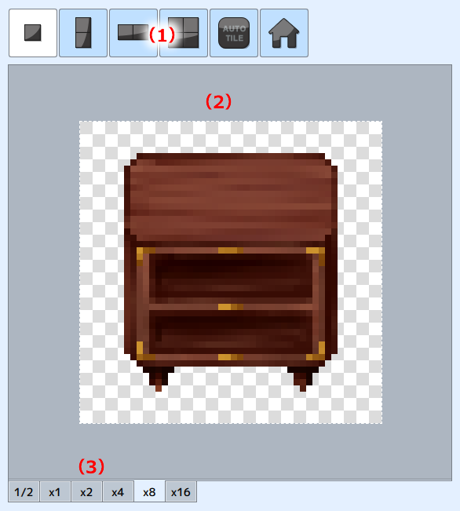
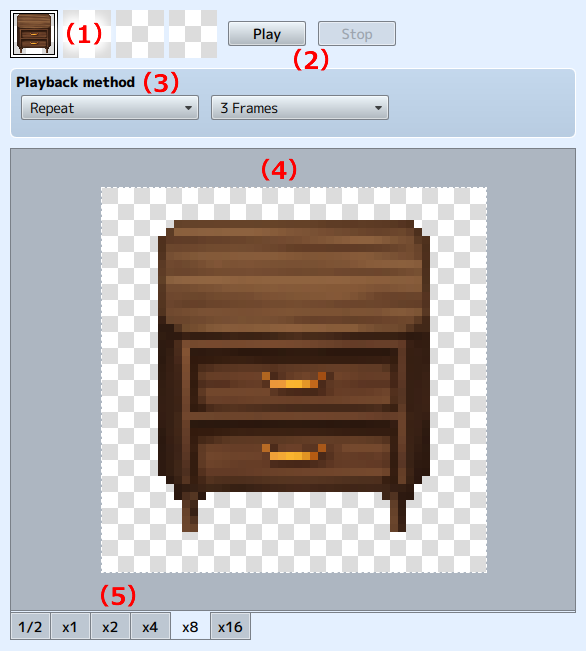
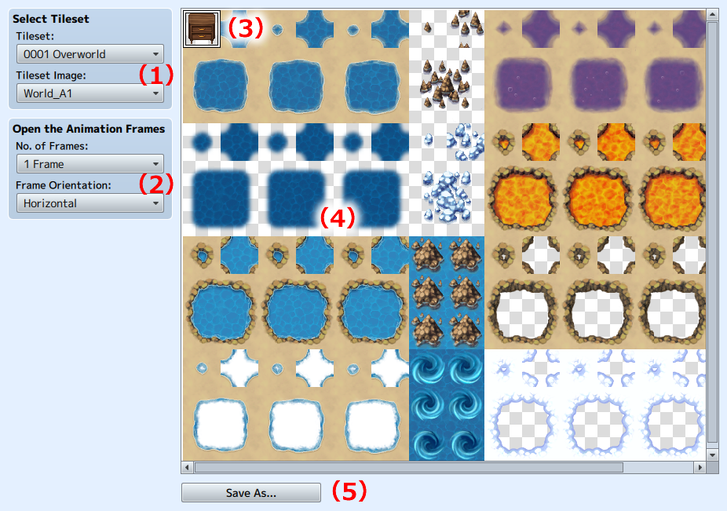
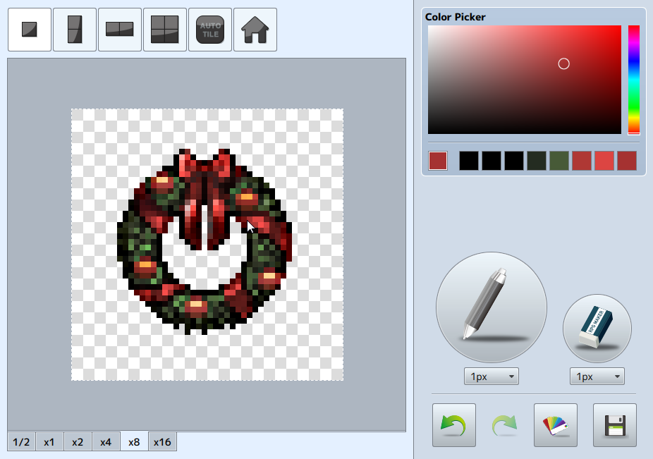
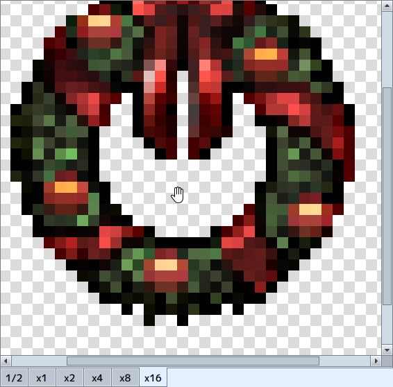

3 Editing Screens
There are 3 types of editing screen, [Draw], [Animation], and [Export].
Draw
Edit tileset images using tools such as the stamp, pen, and eraser.

- (1) Tile Size
-
Select the tile size for the stamp. If the tile size is changed, the canvas will be cleared and the stamp being edited will be deleted.
There are 6 types of tile sizes: 48x48, 48x96, 96x48, 96x96, auto tile (96x114), and 114x114. - (2) Canvas
- Displays the stamps selected on the palette. Adjustments using tools are also done on the canvas.
- Expanding/Reducing the Canvas
- Expands/reduces the canvas.
Animation
A screen to edit the animation frames. The basic functions are the same as [Draw].

- (1) Animation Frames
- Place every frame of the stamp edited on the canvas. There is a maximum of 4 frames.
- (2) Play/Stop
- A test play/stop button. Play will play the animation on the canvas. The frame rate is based on MV.
- (3) Playback Method
-
Specify the playback method.
[Repeat] ... Play the frames in order.
[Loop] ... Play the frames in a loop.
[3 frames] [4 frames] ... Change the number of frames. - (4) Canvas
- Displays the stamps selected on the palette. Adjustments using tools are also done on the canvas.
- (5) Expanding/Reducing the Canvas
- Expands/reduces the canvas.
Export
Edits the tileset with created stamps, and exports. Only the stamp tool can be used.

- (1) Select Tileset
- Selects the MV project tileset images currently open.
- (2) Open the Animation Frames
- Use when you want to open the tiles as animation. Specify the no. of frames and direction to open, and place the stamps.
- (3) Stamps
- Displays the stamps selected on the palette.
- (4) Tileset Image
- Displays the tileset images selected in (1).
- (5) Save As
- Save as a tileset image file.
Canvas Operations
- Dropper
-
Right click on stamps placed on the canvas to apply the color picker's color to the cursor's position.

- Scroll
-
Press the space key on the canvas to change the cursor to a hand. Then drag to scroll the canvas.
